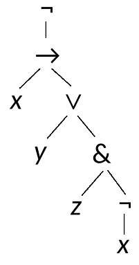
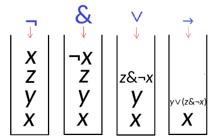
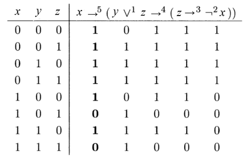

Алгебра высказываний#
Формулы алгебры логики, логические операции, булевы функции#
Понятие высказывания#
Чистая математика - это такой предмет, где мы не знаем, о чем мы говорим, и не знаем, истинно ли то, что мы говорим. (Б. Рассел)
Вначале нам предстоит научиться переходить от бытового опыта к математическому и обратно. Математическое описание реальной ситуации ещё называют математической моделью.
Начнем с простейших моделей, состоящих из одной или нескольких булевых переменных, принимающих значение \(0\) или \(1\).
Пример. Двое студентов могут пойти или не пойти сегодня на лекцию. Принятое ими решение - это набор значений двух булевых переменных \(x, y\).
Если оба пойдут, \(x = 1, y = 1\), т.е. набор значений \(11\).
Если оба не пойдут, \(x = 0, y = 0\), т.е. набор значений \(00\).
Если первый пойдет, а второй не пойдет, \(x = 1, y = 0\), т.е. набор значений \(10\).
Мы получили математическую модель посещаемости занятий. Конкретная ситуация характеризуется значениями двух булевых переменных. Эти значения мы записали в виде двоичной строки длины 2.Определение. Высказывание - это повествовательное предложение, которое в конкретной ситуации принимает истинностное значение 1 (истина) или 0 (ложь).
Составные высказывания#
Булевы переменные будем обозначать малыми буквами латинского алфавита: \(x, y, z, \ldots\)
Определение. Конкретный набор истинностных значений, сопоставленный всем булевым переменным, называется оценкой (также интерпретацией или ситуацией).
В примере с двумя студентами оценка может выглядеть так:
Студент |
Миша |
Боря |
|---|---|---|
Переменная |
\(x\) |
\(y\) |
Значение |
1 |
0 |
Пойдет на лекцию? |
да |
нет |
Оценка - это функция, определенная на множестве булевых переменных, со значениями в множестве \(\{0, 1\}\).
Замечание. Всякая булева переменная соответствует элементарному высказыванию. Истинностное значение элементарного высказывания сразу берется из таблицы (оценки).
С помощью двух элементарных высказываний \(x, y\) и союза и составим новое высказывание \(x \;\textbf{и}\; y\). Это составное высказывание. Истинностное значение составного высказывания вычисляется с помощью оценки по таблице истинности.
\(x\) |
\(y\) |
\(x \;\textbf{и}\; y\) |
|---|---|---|
\(0\) |
\(0\) |
\(0\) |
\(0\) |
\(1\) |
\(0\) |
\(1\) |
\(0\) |
\(0\) |
\(1\) |
\(1\) |
\(1\) |
Зная оценку, можно узнать истинностное значение составного высказывания.
Истинностное значение составного высказывания - это функция, определенная на множестве всевозможных оценок, со значениями в множестве \(\{0, 1\}\).
В таблице истинности составного высказывания перечисляют все оценки (наборы значений переменных) и для каждой оценки - значение составного высказывания.
Пример. Чтобы сесть за руль, у водителя должны быть водительские права, и он не должен находиться в состоянии алкогольного опьянения.
\(x = \) “водитель сел за руль”
\(y = \) “у водителя есть водительские права”
\(z = \) “водитель пьян”
за рулем |
есть права |
выпил |
хорошо? |
|---|---|---|---|
\(x\) |
\(y\) |
\(z\) |
\(f(x, y, z)\) |
\(0\) |
\(0\) |
\(0\) |
\(1\) |
\(0\) |
\(0\) |
\(1\) |
\(1\) |
\(0\) |
\(1\) |
\(0\) |
\(1\) |
\(0\) |
\(1\) |
\(1\) |
\(1\) |
\(1\) |
\(0\) |
\(0\) |
\(0\) |
\(1\) |
\(0\) |
\(1\) |
\(0\) |
\(1\) |
\(1\) |
\(0\) |
\(1\) |
\(1\) |
\(1\) |
\(1\) |
\(0\) |
В этом примере “истинность” ситуации = “законность”. Каждой ситуации (набору значений переменных \(x, y, z\)) ставится в соответствие булево значение \(f(x, y, z)\).
\(f\) - это булева функция с тремя аргументами.
Число двоичных строк длины \(n\) равно \(2^n\). Столько же всевозможных оценок с \(n\) переменными.
Оценки в таблице истинности принято перечислять в лексикографическом порядке.
Говорят, что строка \(s\) лексикографически предшествует строке \(t\) (пишут \(s \prec t\)), если цифра \(0\) в строке \(s\) встречается раньше, чем в строке \(t\).
Например, \(011 \prec 100 \prec 110\).
Более точная запись определения лексикографического предшествования требует записи логической формулы.\(s \prec t \; \Leftrightarrow \; \exists k \in \{1..n\} \colon \left(s_k < t_k \,\&\, \forall j \in \{1..k-1\} \colon s_j = t_j\right)\)
Назначение таких формул - вовсе не напугать и тем более не показать себя умнее. Цель записи формул - избавиться от неоднозначности записи математических утверждений, т.е. достичь точности записи. Формулы легче проверяются на правильность, чем текст в свободной форме. Кроме того, формулы легко программируются на компьютере.
Язык логики высказываний#
У математиков существует свой язык — это формулы. (С.В. Ковалевская)
В предыдущем примере для булевой функции \(f(x,y,z)\) можно выписать формулу.
Первый способ - руководствоваться таблицей истинности.
Разделим таблицу на две части: верхнюю и нижнюю. Верхняя часть соответствует значениям \(x = 0\), нижняя - \(x = 1\). Отдельно для верхней и для нижней части таблицы выпишем свою формулу.
\(x = 0\) \(\Rightarrow\) \(f(x,y,z) = 1\)
\(x = 1\) \(\Rightarrow\) \(f(x,y,z) = y \;\textbf{и}\;\textbf{не}\;z\)
А затем объединим два кусочка в общую формулу:
\(f(x, y, z) = (\textbf{не}\; x \;\textbf{и}\; 1) \;\textbf{или}\; (x \;\textbf{и}\; y \;\textbf{и}\;\textbf{не}\;z) =\)
\(= \textbf{не}\; x \;\textbf{или}\; (x \;\textbf{и}\; y \;\textbf{и}\;\textbf{ не}\;z) =\)
\(= \textbf{не}\; x \;\textbf{или}\; (y \;\textbf{и}\;\textbf{не}\;z) =\)
\(= \textbf{если}\; x \;\textbf{то}\; (y \;\textbf{и}\;\textbf{не}\;z)\)
Второй способ - руководствоваться словесным описанием.
Рассмотрим высказывание: “если водитель сел за руль, у него есть водительские права и он не находится в состоянии алкогольного опьянения”.
Выделим в этом высказывании корневой союз: \(\textbf{ если}\; A \;\textbf{то}\; B\), где \(A = \) “водитель сел за руль”, \(B = \) “у него есть водительские права и он не находится в состоянии алкогольного опьянения”.
Высказывание \(A\) сразу запишем в виде формулы: \(A = x\).
Для высказывания \(B\) снова выделим корневой союз: \(B = B' \;\textbf{и}\; B''\), где \(B' = \) “у водителя есть водительские права”, \(B'' = \) “он не находится в состоянии алкогольного опьянения”.
Высказывание \(B'\) запишем в виде формулы: \(B' = y\). В высказывании \(B''\) выделяем корневой союз: \(B'' = \textbf{не}\; C\). Здесь \(C = z\).
Следовательно, \(B = y \;\textbf{ и}\; \textbf{ не}\; z\).
Исходное высказывание: \(\textbf{ если}\; x \;\textbf{то}\; (y \;\textbf{ и}\; \textbf{ не}\; z)\).
Логические операции#
Для построения составных высказываний используются логические операции.
операция |
обозначение |
название |
аналог |
|---|---|---|---|
\(\textbf{не}\; A\) |
\(\neg A\) |
отрицание |
|
\(A\;\textbf{и}\; B\) |
\(A \,\&\, B\) |
конъюнкция |
умножение |
\(A\;\textbf{или}\; B\) |
\(A \vee B\) |
дизъюнкция |
сложение |
\(\textbf{если}\; A\;\textbf{то}\; B\) |
\(A \to B\) |
импликация |
|
\(A == B\) |
\(A \leftrightarrow B\) |
эквиваленция |
В формулах операции с более высоким приоритетом связывают теснее.
Например, в формуле \(x \vee y \,\&\, z\) подразумевается такой порядок действий: \(x \vee (y \,\&\, z)\). В формуле \(x \vee y \to \neg z \,\&\, u\) подразумевается \((x \vee y) \to (\neg z \,\&\, u)\).
Пример. В примере с водителем формула в математических обозначениях выглядит так: \(f(x, y, z) = x \to (y \,\&\, \neg z)\).
Формулы алгебры логики#
Введем алфавит \(\mathcal A\) как множество, состоящее из:
булевых констант \(0\), \(1\);
символов булевых переменных \(x\), \(y\), \(z\), …;
символов логических операций \(\neg\), \(\&\), \(\vee\), \(\to\), \(\leftrightarrow\);
скобок \((\), \()\).
Формула алгебры логики - это строка над алфавитом \(\mathcal A\), построенная по следующим правилам:
Если \(A\) - булева переменная, то \(A\) - формула. Если \(A\) - булева константа, то \(A\) - формула.
Если \(A\) - формула, то \(\neg A\) - формула.
Если \(A, B\) - формулы, то \((A \,\&\, B)\), \((A \vee B)\), \((A \to B)\) - формулы.
Эквиваленция \(A \leftrightarrow B\) определяется как сокращение: \(A \leftrightarrow B = (A \to B) \,\&\, (B \to A)\).
Наше определение сильно ограничивает множество правильно построенных формул. Так, $(x \,\&\, y)$ - это формула, но $x \,\&\, y$ - не формула. В связи с этим в математической записи обычно расширяют множество синтаксически корректных формул, разрешая писать не все скобки. При этом любой строке, где расставлены не все скобки, однозначно соответствует формула со всеми скобками.Определение множества правильно построенных формул можно записать в виде синтаксических правил:
<формула> ::= <константа> | <переменная>
<константа> ::= 0 | 1
<переменная> ::= x | y | z
<формула> ::= ¬<формула>
<формула> ::= (<формула> & <формула>)
<формула> ::= (<формула> ∨ <формула>)
<формула> ::= (<формула> → <формула>)
Правила указывают на возможность синтаксического вывода. Если строка \(s\) выведена из символа <формула> и \(s\) содержит подстроку, стоящую в левой части правила, то, заменив эту подстроку на правую часть правила, получим новую строку \(s'\), выведенную из строки \(s\).
Например:
<формула> \(\vdash\) (<формула> & <формула>) \(\vdash\)
\(\vdash\) (<переменная> & <формула>) \(\vdash\) (<переменная> & <константа>) \(\vdash\)
\(\vdash\) (x & <константа>) \(\vdash\) (x & 1)
Итак, строка \((x \,\&\, 1)\) является формулой.
Вообще все строки $s$, для которых существует вывод из символа `<формула>`, мы относим к множеству правильно построенных формул, а остальные строки не относим.Для указанного множества существует разрешающий алгоритм, который определяет, является ли заданная строка формулой или нет. Такой алгоритм требует проведения процедуры синтаксического разбора (парсинга).
Операционная семантика языка логических формул#
Определим на множестве правильно построенных формул, в которых нет переменных, вычислительные правила. Каждое правило указывает, к какому результату приводится (оценивается) часть исходной формулы.
\( \dfrac{\neg 0}{1}, \quad \dfrac{\neg 1}{0} \)
\( \dfrac{(0 \,\&\, 0)}{0}, \quad \dfrac{(0 \,\&\, 1)}{0}, \quad \dfrac{(1 \,\&\, 0)}{0}, \quad \dfrac{(1 \,\&\, 1)}{1} \)
\( \dfrac{(0 \vee 0)}{0}, \quad \dfrac{(0 \vee 1)}{1}, \quad\dfrac{(1 \vee 0)}{1}, \quad\dfrac{(1 \vee 1)}{1} \)
\( \dfrac{(0 \to 0)}{1}, \quad \dfrac{(0 \to 1)}{1}, \quad\dfrac{(1 \to 0)}{0}, \quad\dfrac{(1 \to 1)}{1} \)
Например,
\( ((1 \to \underline{\neg 1}) \,\&\, 0) \vdash (\underline{(1 \to 0)} \,\&\, 0) \vdash \)
\( \vdash \underline{(0 \,\&\, 0)} \vdash 0 \)
Дерево разбора формулы#
Согласно определению языка формул, в каждой правильно построенной формуле, содержащей логические операции, можно выделить корневую операцию.
Бинарная корневая операция разбивает формулу на два операнда (левый и правый). Расположим корневую операцию в корне дерева. Результат разбора левого операнда запишем в левом поддереве, результат разбора правого операнда запишем в правом поддереве.
Пример. Формула \(\neg (x \to (y \vee (z \,\&\, \neg x)))\) представляется следующим деревом.

Привычная запись формулы, в которой операция располагается между своими операндами, называется инфиксной. Инфиксная форма записи получается при симметричном обходе дерева формулы.
Префиксная форма записи получается при прямом обходе дерева:
\( \mathrm{NEG}\,(\mathrm{IMP}\, (x, \mathrm{DISJ}\,(y, \mathrm{CONJ}\,(z, \mathrm{NEG}\, (x))))) \)
Постфиксная форма записи получается при обратном обходе дерева:
\( x\;y\;z\;x\;\neg\;\&\;\vee\;\to\neg \)
Для вычисления выражения в постфиксной записи используется стек.

Постфиксная запись применяется для внутреннего компьютерного представления выражений в виде байт-кода. Эта запись не требует хранения скобок, быстро вычисляется.
Таблица истинности логической формулы#
В таблице истинности перечисляются все наборы значений переменных (в лексикографическом порядке) вместе с истинностным значением формулы.
Пример. Построим таблицу истинности для формулы:
\(x \to (y \vee z \to (z \to \neg x))\)

Интерпретатор логических формул#
Итак, мы описали язык логических формул, указали его операционную семантику.
Согласно правилам операционной семантики, вычисление логической формулы (в которой нет логических переменных) сводится к последовательной замене коротких подформул на результат их оценки.
В электронном ресурсе размещён скрипт, в котором реализовано вычисление логической формулы по правилам операционной семантики.
Все логические формулы задаются в виде структуры “дерево формулы”. В языке Python дерево реализуется набором объектов (соответствующих классов), ссылающихся друг на друга.
Пример вывода программы:
(¬(1 ∨ 0) → (0 & 1))
(¬1 → (0 & 1))
(0 → (0 & 1))
(0 → 0)
1
Упражнение. Реализуйте вывод логической формулы в префиксной и постфиксной записи.
Основные равносильности#
Тавтологии#
Определение. Тавтология (общезначимая формула, тождественно истинная формула) - это формула алгебры логики \(A\), которая равна \(1\) на любой оценке: \(A \equiv 1\).
Каждая тавтология - это схема истинных высказываний, в этом смысле тавтология выражает некоторый логический закон.
Пример. Следующие формулы являются тавтологиями:
\(x \to x\) (закон тождества);
\(x \vee \neg x\) (закон исключенного третьего);
\(\neg(x \,\&\, \neg x)\) (закон противоречия);
\(\neg\neg x \leftrightarrow x\) (закон двойного отрицания);
\((x \to y) \leftrightarrow (\neg y \to \neg x)\) (закон контрапозиции);
\(\neg (x \,\&\, y) \leftrightarrow (\neg x \vee \neg y)\) (закон де Моргана);
\(\neg (x \vee y) \leftrightarrow (\neg x \,\&\, \neg y)\) (закон де Моргана).
Улучшенный интерпретатор логических формул#
В электронном ресурсе размещён улучшенный интерпретатор логических формул.
В формулы добавлены переменные, реализовано построение таблицы истинности формулы.
Пример ввода формулы:
expr = Impl(Neg(Var('x')), Var('y'))
Пример вывода программы:
(¬x → y)
(0, 0) -> 0
(0, 1) -> 1
(1, 0) -> 1
(1, 1) -> 1
Упражнение. Используйте интерпретатор, чтобы проверить перечисленные выше тавтологии.
Нормальные формы#
Логическое следствие#
Литература#
Крупский, Плиско - Математическая логика и теория алгоритмов
Стюарт - Теория вычислений для программистов
Хаггарти - Дискретная математика для программистов